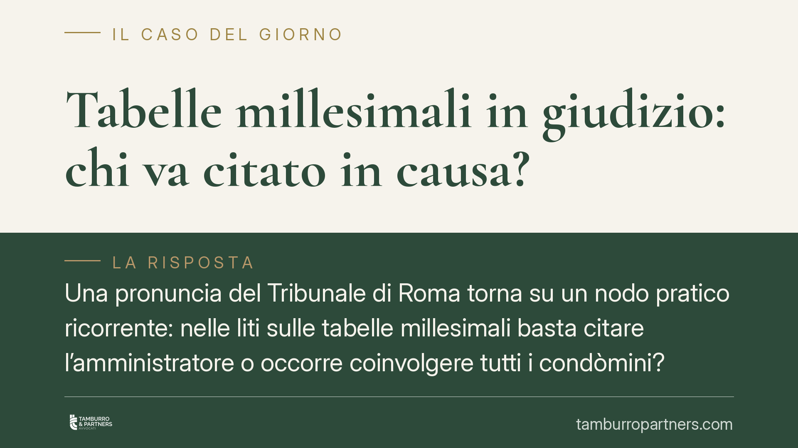

Tabelle millesimali in giudizio: chi va citato in causa?
Una pronuncia del Tribunale di Roma torna su un nodo pratico ricorrente: nelle liti sulle tabelle millesimali basta citare l'amministratore o occorre coinvolgere tutti i condòmini? La risposta dipende dal tipo di azione proposta. Confondere impugnazione della delibera e revisione delle tabelle espone a rischi processuali concreti, dalla nullità alla dichiarazione di inammissibilità.

Il caso
Il Tribunale di Roma, sezione V, si è pronunciato su una controversia relativa alle tabelle millesimali, affrontando due questioni: chi debba essere convenuto in giudizio e come ripartire i costi della consulenza tecnica d'ufficio (CTU).
La distinzione preliminare è essenziale, perché la disciplina cambia in modo netto a seconda dell'azione esercitata.
Inquadramento normativo
L'art. 1131 c.c. definisce i poteri di rappresentanza dell'amministratore. Al comma 2 gli attribuisce la legittimazione passiva per le azioni relative alle *parti comuni* e all'esecuzione delle delibere; i commi 3 e 4 disciplinano l'obbligo di riferire all'assemblea e le conseguenze in caso di inerzia. Ne deriva che, per l'impugnazione di una delibera assembleare (ad esempio quella che approva o modifica le tabelle), è sufficiente citare l'amministratore, che rappresenta il condominio.
Diverso è il quadro quando si agisce per la revisione o modifica delle tabelle ai sensi dell'art. 69 disp. att. c.c. Qui non si contesta un vizio della delibera, ma si incide direttamente sui valori proporzionali di proprietà di ciascun condòmino. Per questo si configura un'ipotesi di litisconsorzio necessario: il giudizio deve svolgersi nei confronti di *tutti* i condòmini, pena il difetto di integrità del contraddittorio.
È opportuno precisare che l'obbligo di chiamare in causa tutti i condòmini nella revisione ex art. 69 è oggi ampiamente riconosciuto dalla giurisprudenza, non solo per le tabelle di natura contrattuale ma anche per quelle di formazione assembleare, proprio perché l'azione modifica situazioni giuridiche soggettive individuali.
Sul punto resta centrale l'insegnamento delle Sezioni Unite n. 18477/2010, che ha chiarito la differenza tra tabelle a natura contrattuale (frutto di un accordo tra tutti i condòmini, modificabili solo con il consenso di tutti o dal giudice) e tabelle meramente ricognitive dei valori, rivedibili con la maggioranza prevista dalla legge quando risultino errate o mutate le condizioni dell'edificio.
Implicazioni pratiche
La lettura offerta dal Tribunale di Roma non va intesa come regola unica secondo cui "si cita sempre e solo l'amministratore". Vale per l'impugnazione della delibera; non vale per l'azione di revisione, dove il coinvolgimento di tutti i condòmini è indispensabile.
Chi sbaglia l'inquadramento rischia conseguenze pesanti: un'azione di revisione promossa contro il solo amministratore può condurre all'ordine di integrazione del contraddittorio e, in mancanza, all'estinzione o all'inammissibilità, con perdita di tempo e di spese.
Quanto ai costi della CTU — la perizia con cui il tecnico nominato dal giudice ricalcola i millesimi — la pronuncia li ripartisce tra tutti i condòmini. Si tratta di una soluzione coerente con l'interesse comune alla corretta determinazione dei valori, ma va segnalata come indirizzo giurisprudenziale non codificato: la regola non è scritta in una norma specifica e il giudice conserva un margine di apprezzamento nel governo delle spese, potendo modularle in base all'esito e alla condotta processuale delle parti.
Un ulteriore passaggio da non trascurare: le controversie in materia di condominio rientrano tra quelle soggette a mediazione obbligatoria come condizione di procedibilità, ai sensi dell'art. 5 del D.Lgs. 28/2010. L'esperimento del tentativo va effettuato prima di avviare la causa.
Cosa fare in concreto
- Qualifica l'azione prima di agire: verifica se intendi impugnare una delibera (art. 1131 c.c., basta l'amministratore) o rivedere le tabelle (art. 69 disp. att. c.c., serve il coinvolgimento di tutti i condòmini).
- Ricostruisci la natura delle tabelle: accerta se sono contrattuali o assembleari, applicando i criteri delle Sezioni Unite 18477/2010, perché ne dipendono maggioranze e presupposti della modifica.
- Integra il contraddittorio quando necessario: nell'azione di revisione, cita tutti i condòmini fin dall'atto introduttivo per evitare ordini di integrazione e rischi di inammissibilità.
- Attiva la mediazione: promuovi il tentativo obbligatorio ex art. 5 D.Lgs. 28/2010 prima del giudizio, conservando la documentazione dell'esperimento.
- Metti in conto i costi della CTU: considera che la perizia tecnica può essere ripartita tra tutti i condòmini e valuta preventivamente l'impatto economico dell'accertamento.
Disclaimer
Contributo informativo a cura di Tamburro & Partners Avvocati. Non costituisce parere legale.
Ogni condominio ha una storia a sé.
Se gestisci un'amministrazione e vuoi un confronto su una specifica questione condominiale, scrivi allo studio. Ti rispondiamo entro un giorno lavorativo.